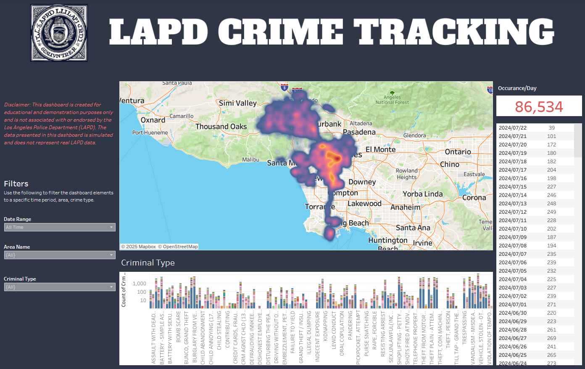

🔗 Explore the interactive dashboard here:
View Interactive Dashboard
🚔Crime Tracking Dashboard (Simulation)
This interactive dashboard provides a simulated visualization of crime data across the Los Angeles
metropolitan area. Please note: this is a demonstration tool and not affiliated with or endorsed by the Los
Angeles Police Department (LAPD). The data used here is simulated and does not reflect actual LAPD crime
reports.
🔍 Features:
- Heatmap Visualization: Displays simulated crime density throughout LA, with color intensity indicating
frequency of reported incidents.
- Criminal Type Breakdown: A bar chart categorizes different crime types (e.g., theft, assault, robbery),
showing counts and distribution over time.
- Date and Area Filters: Users can filter the dashboard based on specific date ranges, areas, and criminal
categories.
- Occurrence Table: A summary of simulated daily crime occurrences provides insight into activity trends
by date.
This tool was created for educational and demonstration purposes to showcase data visualization capabilities
using mapping and dashboarding tools.